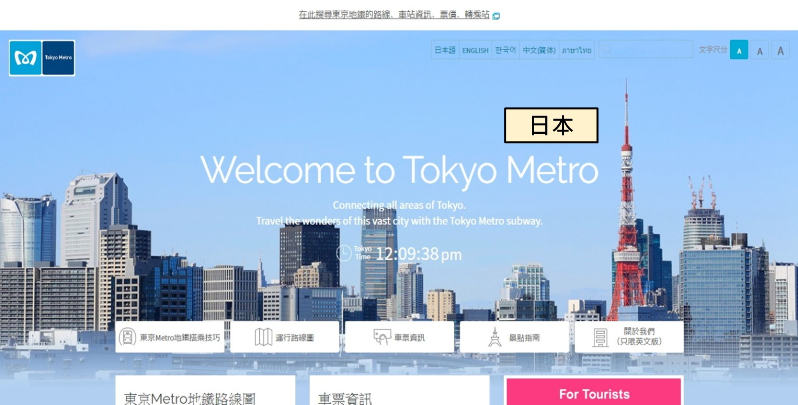
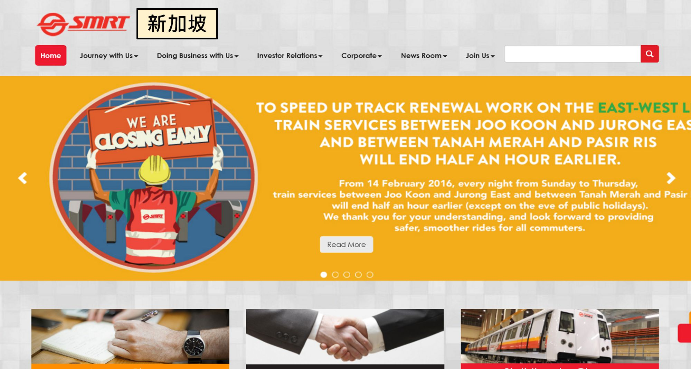
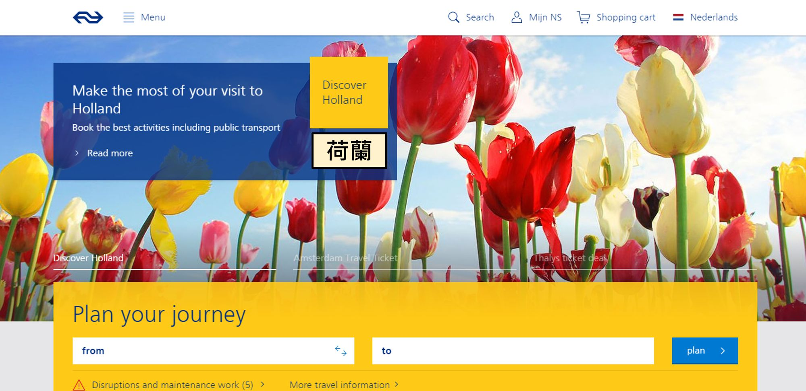
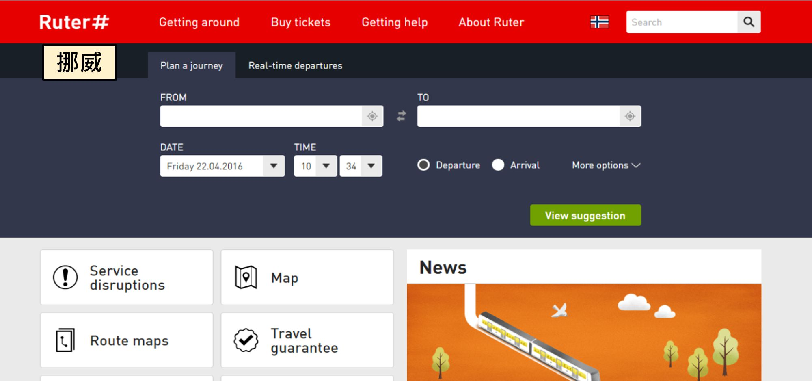
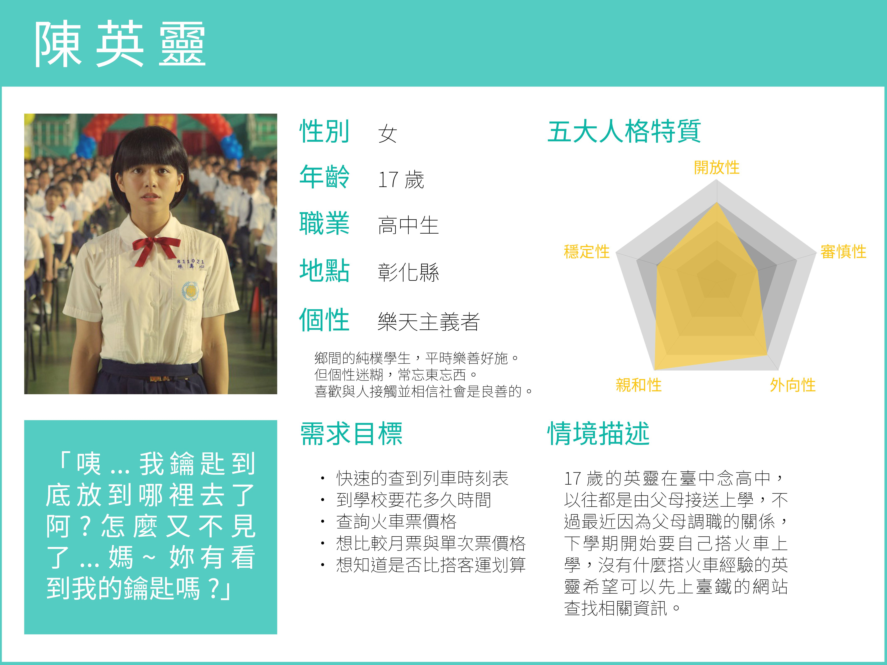
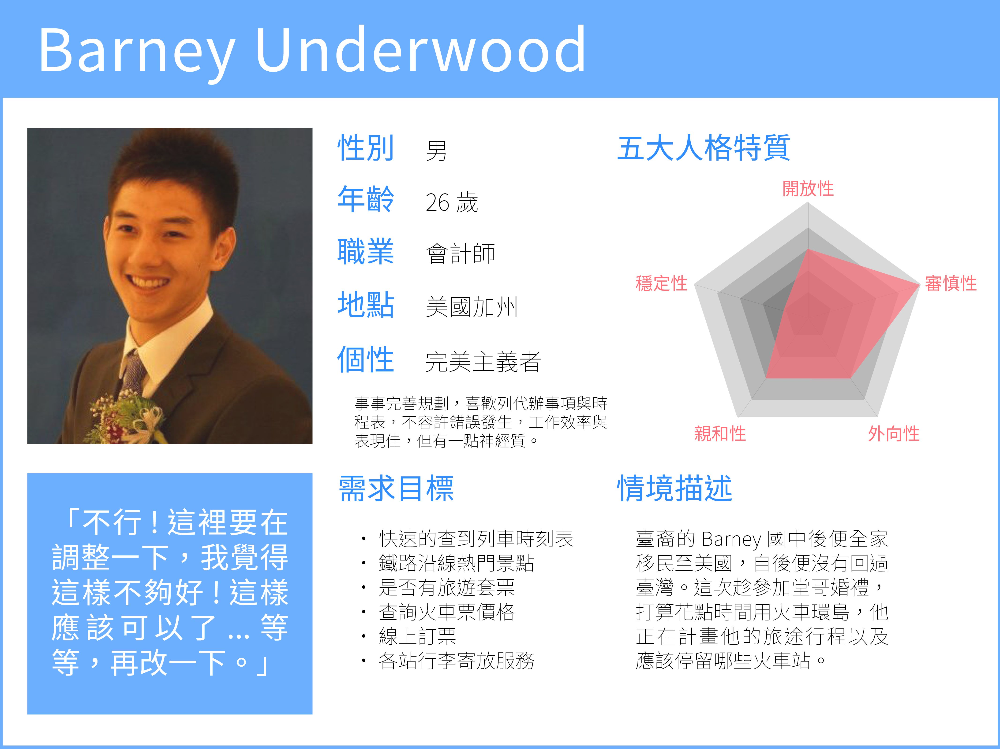
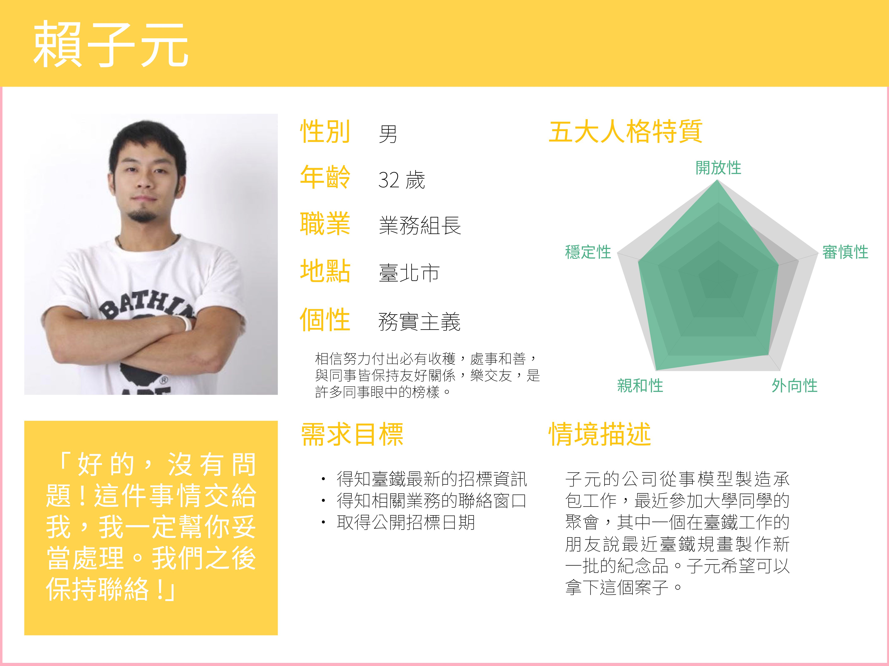
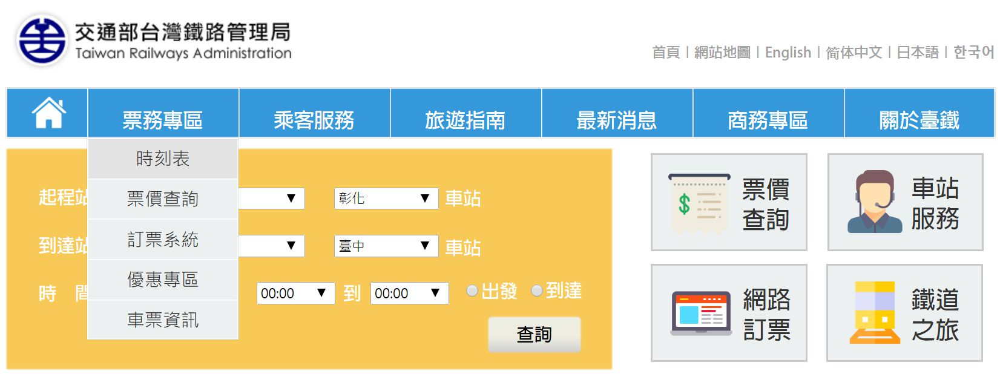

Taiwan Railway
Infomation Architecture Redesign
Role: Information Architect
Introduction
This is a student group project for the “Information Architecture and Web Design” course. In this project, we aim to re-structure and redesign the Taiwan Railway’s (TR) website. The redesign process includes benchmarking study, user analysis, and content design using four systems of information architecture: organization, navigation, labeling and search. The final product is an interactive high fidelity prototype made by Axure RP.
Design Process
Benchmarking

User Analysis
Content Design
Result
Benchmarking
   Before we started working on the redesign of TR website, we firstly conducted a benchmarking study investigating four other websites with similar functionalities. These four websites are Tokyo Metro, Singapore SMRT, Holland NS and Norway Ruter. In this study, we discovered the following:
- Most of these websites have clearly identified their user groups. Their website layout segmentation is specifically designed according to certain groups of users, such as travelers or business partners.
- Most of these websites have clear organization of information. The language they use is relatively simple and intuitive. On the contrary, TR’s organization of information is quite messy.
- Most of these websites value functionalities rather than information. They enlarge important interactive buttons and search function. On the other hand, TR’s website is packed with information and tons of buttons.
- Aesthetically, most of these websites use simple layout and limited colors. Icon usage follows consistent styles. In TR’s website, users are easily distracted by the colorful and overly used text and icons.
User Analysis
  Based on the result of our benchmarking study, we decided to segment TR’s users into three categories: commuter, traveler and business partner. And we came up with three proto-personas to aid us in the design process. For example, since we have a business partner as our user, we hence can’t rule out information about business cooperation and should design a section for him to quickly access the information he wants.
Content Design
- Organization system
- Navigation system
- Labeling system
- Search system
We simplify the classification into six categories: Tickets, Passenger Services, Travel Guide, Latest Buzz, Business, and About. We firstly list out all the information on TR’s website and use card-sorting technique to group similar content. Then, we rule out redundant and repetitive links and information in the original website and keep information that our user groups will care about. Previously there were eight categories with 84 sub-categories and we simplify it into six categories with 22 sub-categories.
We place a global navigation with six categories at the homepage and place the local navigation with detailed sub-categories at the side of the pages which users can access through the global navigation. With the help of local navigation, users can easily know which page they are at and what are the nearby pages. Users can also access back to homepage by clicking homepage icon at the front of the global navigation or TR’s logo.
We standardize the usage of font style and text size. The color usage is limited to two main colors, blue and yellow, to make it aesthetically pleasant and not distracting. We also take away overly used icons and adopt flat icons to remain consistency.
We place a prominent find journey search section at the homepage to emphasize TR website’s main functionality, providing quick access for users to find train schedule.
Result
Based on the knowledge we learn from this course, we redesigned TR’s website and presented it with a high fidelity prototype made by Axure RP However, due to the shortage of time and TR’s massive quantity of information, our team didn’t finish all content in all pages. In addition, we didn’t have the time to do testing and iteration, so we don’t have data to support that our new website has better usability than the original one. This prototype surely has plenty of room for improvement.